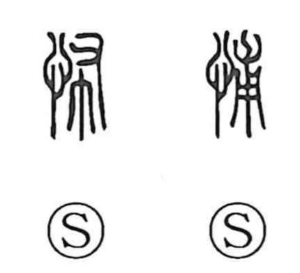

怖

Kun: kowai, kowagaru, osoreru | On: fu
fear ・ be afraid ・ frightening
Explanation
怖 is a phono-semantic character: the heart radical signals an inner, emotional state, while the right-hand element 布 (also related to 甫) supplies the sound fu. Already in the Shuowen it is glossed as “to fear,” with 怖 recorded as a form bearing the same meaning. Shirakawa views 布 and 甫 as sounds that vividly carry the feeling of a heart seized by terror. Hence its use in compounds such as 畏怖 (ifu), 恐怖 (kyofu), and 驚怖 (kyofu), where it denotes fear and the shuddering that accompanies it. In Japanese it is read kowai (“frightening”) and appears in expressions like 怖いもの無し, “afraid of nothing.”